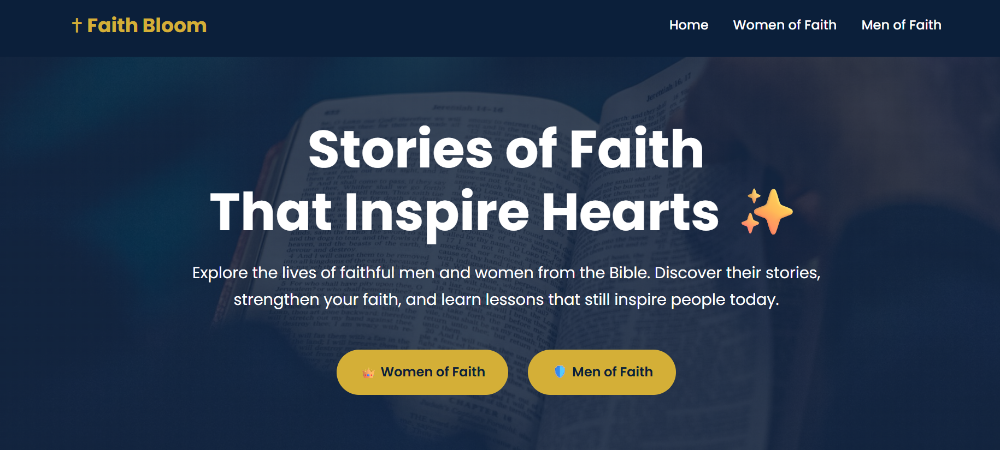
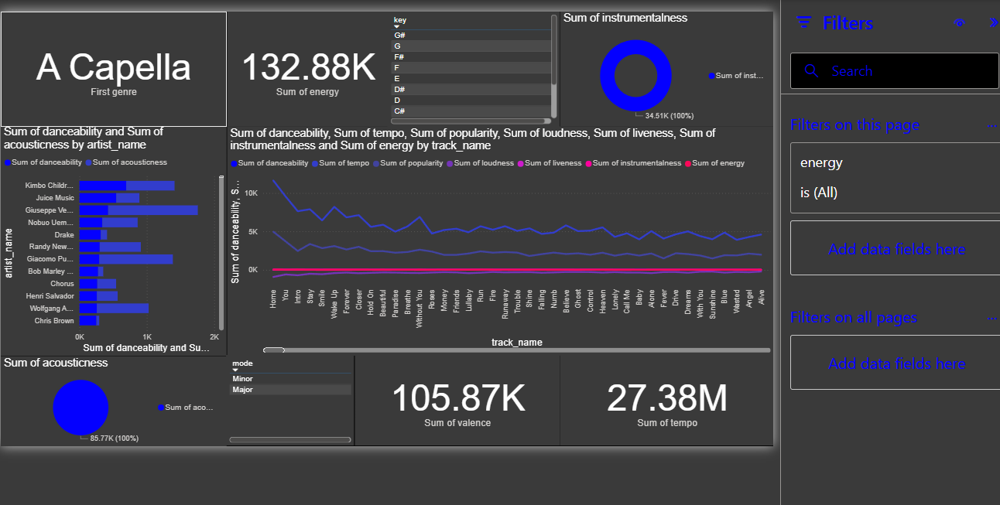
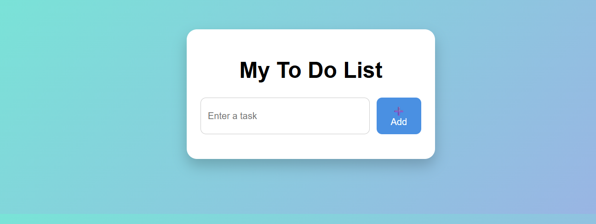

Projects
Projects That Showcase My Learning & Skills

🌸 Faith Bloom
In ProgressA Christian faith platform designed to help users grow spiritually through faith-based resources.
- Women's Faith (10 Pages)
- Men's Faith (10 Pages)
- Responsive Design
- Clean User Interface
Technologies
HTML • CSS • JavaScript • GitHub Pages

📖 Bible Explorer
PlanningA comprehensive Bible platform planned to include all 66 books, chapters, verses, search functionality, maps, timelines, characters, quizzes, and study resources.
Technologies
HTML • CSS • JavaScript • Future Database Integration

🎵 Spotify Data Analytics Dashboard
CompletedAnalyzed 170,000+ Spotify records using Python and Excel, then built an interactive Power BI dashboard and presented findings using Canva.
Technologies
Python • Pandas • Excel • Power BI • Canva

📋 To-Do List Web Application
CompletedA task management application allowing users to add, complete, and delete daily tasks through a simple and responsive interface.
Technologies
HTML • CSS • JavaScript
📢 Advertisement Effectiveness in Airtel
Academic ProjectConducted an academic research project analyzing Airtel's advertisement effectiveness using questionnaires, SWOT analysis, and business recommendations.
Technologies
Research • SWOT Analysis • MS Office

🌐 Personal Portfolio Website
In ProgressA modern portfolio website showcasing education, projects, certifications, technical skills, career journey, and achievements.
Technologies
HTML • CSS • JavaScript
🔢 Number Guessing Game
CompletedA beginner programming project focused on user input, conditional logic and basic interaction.
Technologies
Programming fundamentals